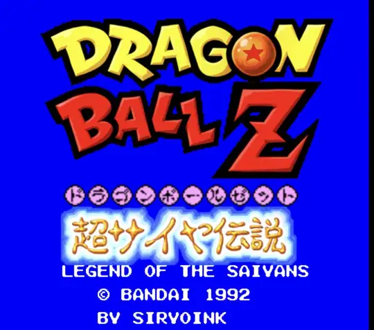

七龍珠Z 超賽亞傳說 HD 繁體中文版
將此網頁透過 Safari「分享 → 加入主畫面」，即可像 App 一樣使用。遊戲檔案只在本機儲存與運行。

遊戲 ROM／IPS（首次匯入後保存在本機）
首次使用請選 ROM，日文 Rev 1 ROM 另需選 IPS。
約 462 MiB。驗證成功後自動嘗試保存到這台 iPhone，下次開啟可自動重新驗證。若 iOS 拒絕保存，仍可在本次遊玩，但下次需要重新選取原始 ZIP。
尚未啟用本次分頁的 HD 素材讀取。
正在讀取 bg/index.json...
此處只顯示官方素材索引。遊戲啟動並開啟 HD 2x 後，會由 Rust PPU 核對 VRAM 與圖層設定；只有相符背景才會嘗試套用。
匯入後讀取 mode7/index.json，需 VRAM 平面與調色盤完全驗證。
匯入後讀取 cards/index.json，以 ROM 2bpp 圖塊精確核對 base／roles 美術。
匯入後讀取 maps/index.json，以 ROM 指標與 PPU BG2 雙重檢查。
匯入驗證後將讀取 class3、class2 索引；只使用原作者的精確 source_key。
匯入後將讀取 class1/index.json，與玩家 ROM 的原始圖塊進行核對。
匯入後將讀取 class2/index.json。僅精確匹配的戰鬥人物會替換原始精靈像素；招式特效、人物輪廓擴大及場景物件仍待整合。
HD 素材本機保存管理（自動保存）
驗證成功後將會自動分段保存。若失敗仍可直接使用本次已驗證的 ZIP；Safari 不能永久記住「檔案」App 的檔案路徑。請保留原檔備份。
ROM、IPS 及 HD 美術包只在 iPhone 本機使用，不會上傳。
頁面 dbz-hd-tw-pwa-v47；WASM 啟動時核對
啟動時嘗試開啟聲音；如無聲請按「啟用聲音」。
HD 設定與效能分析（點擊展開）
卡頓監測：正在收集影格耗時…
HD 分段耗時：正在採樣…